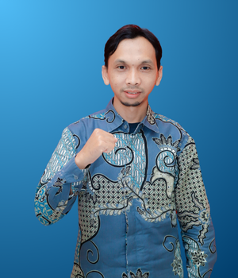

Sambutan Kepala Sekolah

Faizul Munif, S.Si.
Assalamualaikum Wr. Wb.
Segala puji hanyalah milik Allah, Rabb semesta alam. Shalawat dan salam semoga senantiasa terlimpah kepada junjungan kita Rasulullah Muhammad SAW, keluarga, dan pengikutnya yang istiqomah di jalan Islam.
Bapak-Ibu yang budiman, di antara tanggung jawab besar yang jelas diperhatikan dan disoroti oleh Islam adalah tanggung jawab seorang pendidik terhadap orang-orang yang berada di pundaknya, berupa tanggung jawab pengajaran, bimbingan, dan pendidikan.
Ini sesungguhnya bukan tanggung jawab kecil dan ringan karena tanggung jawab dalam persoalan ini telah dituntut sejak seorang anak dilahirkan hingga ia mencapai usia remaja, bahkan sampai ia menginjak usia dewasa yang sempurna. Jelas, bahwa seorang pendidik, baik guru, ayah ibu, maupun tokoh masyarakat, ketika melaksanakan tanggung jawabnya secara sempurna, melaksanakan kewajiban–kewajiban penuh dengan rasa amanat, kesungguhan serta sesuai dengan petunjuk Islam, maka sesungguhnya ia telah mengerahkan segala usahanya untuk membentuk individu yang penuh dengan kepribadian dan keistimewaan. Dengan demikian, baik disadari maupun tidak, pendidik telah ikut mengambil bagian penting dalam membangun masyarakat ideal yang nyata dengan berbagai kepribadian dan keistimewaan dalam membentuk individu dan keluarga yang saleh.
Bapak ibu yang berbahagia, dengan ajaran-ajarannya yang bijak, Islam telah memerintahkan kepada setiap orang yang mempunyai tanggung jawab untuk mendidik, terutama Bapak–bapak dan Ibu–ibu, untuk memiliki akhlak luhur, sikap lemah lembut, dan perlakuan kasih sayang. Sehingga anak akan tumbuh secara istiqomah, terdidik untuk berani dan berdiri sendiri, kemudian merasa bahwa mereka mempunyai harga diri, kehormatan, dan kemuliaan. Akhirnya, mari kita bersama-sama bergandengan tangan mendidik anak-anak kita menjadi generasi muda Islam yang berakhlak karimah, berprestasi akademik tinggi, dan mampu berperan di lingkungan masyarakatnya. Sehingga ketika anak-anak kita tumbuh besar mereka telah terbiasa melakukan dan terdidik untuk menaati Allah, melaksanakan hak-Nya bersyukur kepada-Nya, kembali kepada-Nya, berpegang teguh kepada-Nya, bersandar kepada-Nya, dan berserah diri kepada-Nya.
Wassalaamu’alaikum wa rahmatullaahi wa barakatuh
Vision & Mission
Vision
To become an institution that shapes a generation mature in islamic faith, noble in character, and strong in knowledge, with critical thinking and care for the environment, while fostering multilingualism, intercultural understanding, and meaningful engagement with local and global issues to prepare individuals who contribute responsibly to a better world.
Mission
1. Deepen students’ faith and spiritual maturity through critical reflection, personal worship commitment, and the application of Islamic values inspired by the Prophet Muhammad (peace be upon him) and his companions in complex real-life situations.
2. Strengthen noble character and integrity by fostering responsibility, leadership, and ethical reasoning guided by the prophetic model within personal, academic, and community contexts.
3. Build strong academic knowledge through rigorous inquiry, conceptual understanding, and mastery of disciplines that integrate faith, science, and humanity.
4. Develop critical and creative thinking through interdisciplinary research, innovation, and problem-based learning that addresses authentic global issues.
5. Promote environmental responsibility through systems thinking, ecological literacy, and student-led sustainability initiatives.
6. Foster multilingualism and intercultural understanding by encouraging meaningful engagement across languages, cultures, and perspectives.
7. Empower students to engage with real-world local and global challenges through critical dialogue, civic involvement, and community-based action.
8. Nurture a strong sense of global citizenship and leadership rooted in faith, compassion, and the prophetic example, with a commitment to building a just and ethical civilization.